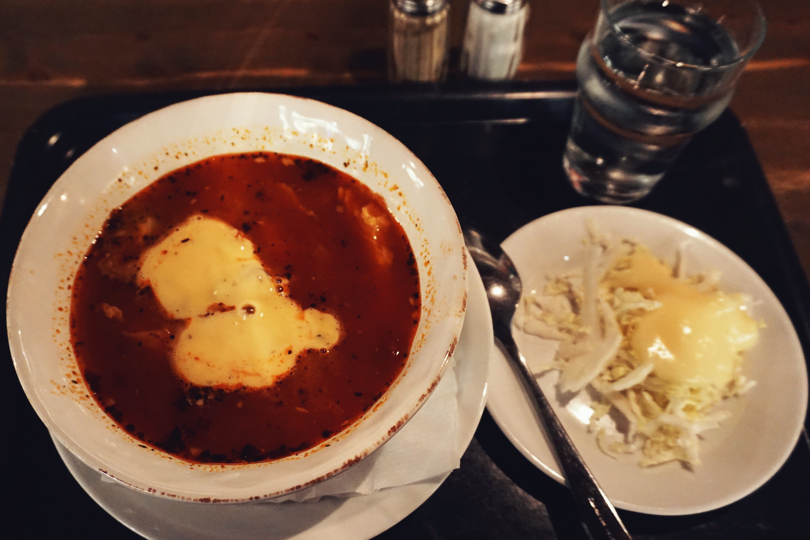
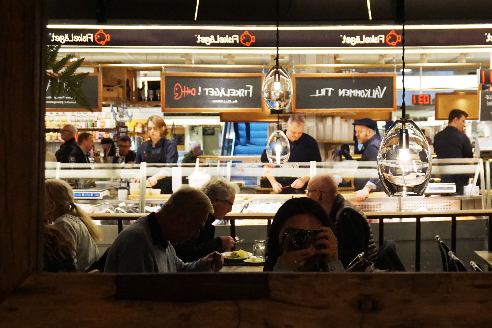

记2017年3月3日第一次从Uppsala到Stockholm的短途旅行（好像也是最后一次。
一次心血来潮之举，
前一天晚上只进行了简单的规划，
结果我认为这一日路线简直是精华，还把斯京交通坐了个遍（包括轮渡、地铁、公车），嘻嘻。
注：Uppsala出发，购买SL一日票非常划算，斯京交通随便坐。
【行程地图】如下：
行程
10:00 - 11:00 出发
本来计划更早从Uppsala出发，结果睡过了头，不过毫不影响，10点从Uppsala C坐Commuter Train到Stockholm C，由于有UL月票，只需购买SL一日票（学生价：80kr+20kr卡片工本费）。一个小时的车程，如同坐公交车一样，随意找个位置坐下就行，这趟车竟然没有人查票，不过有发小广告的，没人看还二次回收，甚是节约成本。11:00 - 12:00 城区与午餐
11点到斯京后，步行至Kajsas Fisk餐厅吃中饭，这是一家在TripAdvisor上排名最高的平价鱼餐厅，招牌Kajsas soppa(Kajsas鱼汤)（110kr）可免费续汤，有面包沙拉配套，汤很实诚有各种鱼肉，虾肉，蛤蜊等，个人喝多了有点咸，基本上一碗就足够了。
饱腹之后，从中央车站所在的城区，顺着一整条步行街直走就能到老城区Gamla Stan，大约15min的脚程，会路过各种纪念品商店、有名的皇后大街、无数H&M，然后走过一座桥就到老城区了。
老城坐落在市中心的一座小岛上，封面图是从连接老城的桥上拍摄的，在桥上可以看到远方的骑士岛教堂，桥底的水清澈至极，倒映出的景色就像一幅文艺的水彩，去不了威尼斯，但可以在斯京感受一下”北方威尼斯”的风韵。
Kajsas restaurant
Drottninggatan
- 12:00 - 12:30 卫兵换岗
斯德哥尔摩皇家卫兵每天都会在12:15进行换岗仪式，大概持续15min，有卫兵打卡执念的可以提前去占一个位置围观（比如我），我误打误撞正好12:15走到了皇家广场，工作日都围满了人…卫兵心里应该是暗爽的，天天被围观拍照蛤蛤蛤。


- 12:30 - 14:00 皇宫
如果没有参观过欧洲皇宫，亦或是对皇宫文化有迷之爱好的话，看完卫兵换岗，可以从旁边的入口参观瑞典皇宫（学生价80kr）。由the Royal Apartment开始，一共有3个区域，每去一个区域就会在门票上划掉一个景点，然而看完Royal Apartment，旁边有个楼梯可以直接去到The Tre Kronor Museum，不用绕到正门进去。Royal Apartment就是皇宫房间的陈列，反正讲究的是一个金碧辉煌，玻璃柜中精致的瓷器水晶，分分钟想要种草买一套回家。最后有一个陈列瑞典王妃婚纱的展厅，婚纱属于低调奢华的类型，有一双鞋底是心型的鞋子比较有意思，也想种草一个。The Tre Kronor Museum是一个地底的小型博物馆，其实就是以前旧王宫的遗址墙体。之后是参观the Treasury皇宫宝库，珍藏有瑞典王室各式各样的王冠和礼服，可以近距离体会皇室的奢华高贵，不过不能拍照= =